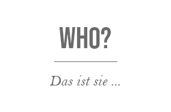

Franziska Kühne
Jahrelang als Fotografin tätig ist die Liebe zu den Bildern ungebrochen. Der schnellen Entwicklung geschuldet erwachte auch mein Interesse an allem digitalen- insbesondere der Bildbearbeitung, Grafik-und Logoerstellung sowie die Entwicklung von kompletten Corporate Designs. Ich absolvierte die Ausbildung zur Mediengestalterin für Digital und Print Fachrichtung Gestaltung und Technik. Da mein Wissensdurst hiermit noch nicht befriedigt war, begann ich eine Weiterbildung zur UI / UX Designerin - und bin somit ideal für den digitalen Markt aufgestellt.

- Fotografin
- Mediengestalterin
- UI / UX Designerin
- DevOps
